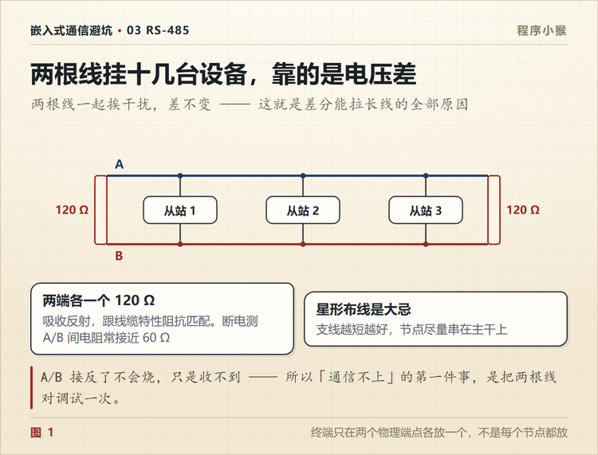
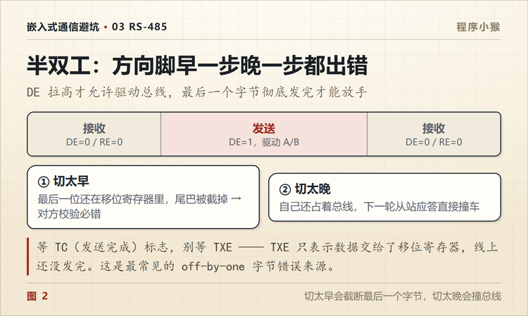

RS485 通讯不上？从 A/B 接线查到 120Ω 终端电阻
🐵 程序小猴 · 嵌入式通信避坑 Vol.03
两根线挂一串设备，能跑几百米，也能让你查一整天。
一条总线挂六台温控器，前四台怎么都好，第五台开始随机掉线。
换线、改波特率、重启主站，折腾了一下午。最后拆开端子一看，A 和 B 接反了。
RS-485 的坑，八成不在协议里，在接线和几个阻值上。
一、它为什么能跑几百米
先看它和 RS-232 的根本差别。
RS-232 是单端，接收端量的是「这根线对地多少伏」。
RS-485 是差分，接收端量的是「A 和 B 之间差多少伏」。
| RS-232 | RS-485 | |
|---|---|---|
| 参考对象 | 对地 | A 与 B 的差值 |
| 逻辑判定 | ±3V 以上 | 差值 ±200mV 以上 |
| 抗干扰 | 单端，干扰直接叠加 | 共模干扰同时叠在两根线上，差值不变 |
| 距离 | 15 米（标准值） | 1200 米（低速） |
干扰来的时候，A 抬高 1V，B 也抬高 1V，差值没变，接收端照样能判。这就是差分的全部秘密。
顺带一个好处，两根线绞在一起，外界干扰在两根线上感应的电动势方向相同、大小接近，互相抵消。
所以工业现场那两根线必须是双绞线，不是随便找两根排线拧一起。

二、32 个节点是上限吗
标准里写的是 32 个单位负载。
一个单位负载相当于 12kΩ 的输入阻抗。早期的收发器就是 1 个单位负载，所以最多挂 32 个。
现在常见的芯片是 1/4 负载，输入阻抗 48kΩ，理论上能挂到 128 个。
但理论值和现场能跑的数量，是两回事。真正卡住你的是这三样。
- 线缆电容。每米几十到上百 pF，挂得越多、线越长，边沿越糊。
- 波特率。9600 挂三十个问题不大，115200 挂十个就开始挑线。
- 终端和偏置。节点多了，偏置电流被分摊，空闲态容易飘。
我的经验是，超过 16 个节点就别按标准值算，先拿示波器看一眼空闲电平和边沿。
三、A/B 到底谁正谁负
这是 RS-485 最烦人的历史遗留。
不同厂商的 A/B 标法可能相反。有的厂 A 是正，有的厂 A 是负。你按「A 对 A、B 对 B」接，有一半概率是反的。
接反了会怎样？差分信号整体反相，接收端读到的 0 和 1 全颠倒。现象是收到一堆乱码，或者 CRC 全错。
怎么确认？两个办法。
看手册。收发器数据手册里会写 A、B 在空闲和发送时的电平关系。
看波形。空闲时量 A 对 B 的电压，正常是几十毫伏的偏置差，发送时跳到 ±1.5V 以上。反了就是反了。
别凭直觉，也别信「行业惯例」这四个字。
四、120Ω 只放两个
终端电阻的作用是阻抗匹配，消掉信号到线末端反射。
关键是位置。只放在总线的两个物理端点，中间节点一个都不放。
常见错误是每个节点都焊一个 120Ω。六个节点六个电阻，并联下来只有 20Ω，驱动器根本推不动，通信距离反而变短。
有个快速判断法。断电，万用表量 A 和 B 之间的电阻。
- 接近 120Ω，说明只放了一端，另一端漏了
- 接近 60Ω，两端都在，正常
- 明显低于 60Ω，多半是有人多放了
要注意偏置电阻和芯片会影响读数，这个方法只能当参考，不能当判决。
还有一点，短距离低速可以不放终端。十几米、9600 的场合，不放也能跑，放了反而增加功耗。
五、别接成星形
RS-485 要一字排开，手拉手往下走。
从主站拉一根线出去，分叉成四路接到四台设备，这叫星形。每个分叉点都是一个阻抗不连续点，信号在那里反射。
低速短距离的时候，星形可能也能跑。速度一上去、距离一拉长，问题立刻出现。
现场如果实在没法一字排开，那就把支线尽量缩短。经验值是支线长度不要超过主干的一个零头，越短越好。
六、最后一个字节被吃掉
这是最隐蔽的一类 bug。
RS-485 是半双工，收发共用一对线，靠 DE 引脚切换方向。
发送流程看起来很简单，拉高 DE，写数据，拉低 DE。
问题在第三步，什么时候算「发完了」？
不是把最后一个字节写进 UART 数据寄存器就算完。那时候数据还在移位寄存器里一位一位往外挪。
DE 提前拉低，最后一个字节的尾巴就被切掉了。对端收到的是不完整的帧，CRC 必然错。
正确的做法是等发送完成标志。不同芯片叫法不一样，有的叫 TC，有的叫 TXE 加延时。总之要确认移位寄存器真的空了。
这类 bug 特别阴，因为大部分帧是好的，偶尔错一帧。你会以为是干扰，其实是自己关早了。

七、隔离和防护
工业现场两台设备，供电系统可能不同，地电位差可能几十伏。
RS-485 的共模范围是 -7V 到 +12V，超出去就烧芯片。电机启停、变频器干扰、雷击浪涌，都能轻松突破这个范围。
所以现场设备通常是这么做的。
隔离电源 + 数字隔离器 + 隔离型 485 收发器 + TVS 管。
成本增加十几块，换来的是不烧板子。批量产品里这笔钱花得值。
八、按这个顺序查

| 顺序 | 查什么 | 怎么查 | 典型现象 |
|---|---|---|---|
| ① | A/B 有没有接反 | 量空闲态 A 对 B 电压 | 全是乱码、CRC 全错 |
| ② | 终端电阻 | 断电量 A/B 间电阻 | 距离一长就掉 |
| ③ | 拓扑 | 看是不是星形、支线多长 | 高速时误码 |
| ④ | 共地 | 量两端 GND 压差 | 偶发错、随电机启停 |
| ⑤ | DE 切换时机 | 查是否等 TC 标志 | 偶尔丢最后一字节 |
| ⑥ | 波特率与线材 | 是否双绞、是否屏蔽 | 全乱 |
| ⑦ | 协议层 | 地址、CRC、超时 | 单台不响应 |
从上往下走。第 ① 步两分钟，能解决我遇到的一半问题。

RS-485 不难，它的电气规则就那几条。
难的是现场那根线到底怎么走的、那个电阻到底焊了几个、那个 DE 到底什么时候关的。
你遇到的 485 问题，最后是接线、电阻还是代码？评论区说说。
📌 这是「嵌入式通信避坑」第 3 篇，全系列 14 篇，从串口一路讲到 CAN 和无线选型。
💬 觉得有用就点个在看，下一篇进板内总线，把 I2C 读一个寄存器的 11 个动作拆开讲。